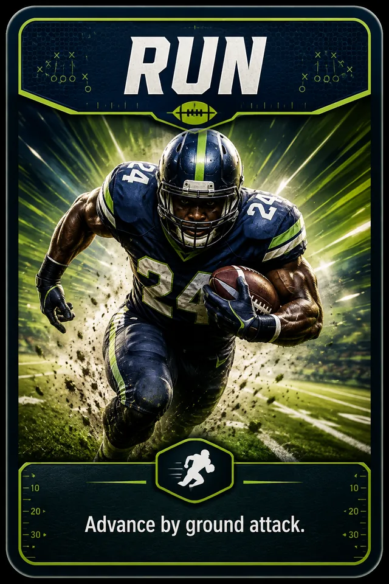
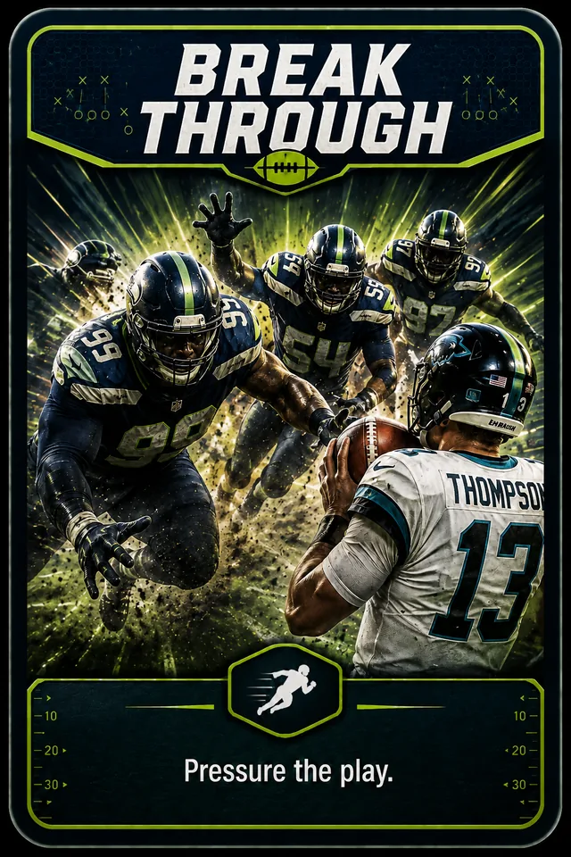

MAGIC 01Control
TIME STOP
Freeze the action
During this play, no animal except the caster may play Action Cards. This includes the caster's teammates. Magic Cards are unaffected.
Follow all NINE steps: sort five types of cards, set up the mat, choose teams, deal and roll dice, attack and defend, use Magic and animal abilities, then finish four quarters. The higher-scoring team wins.
Sort everything before you start dealing. Do not mix these categories together.
Open the card set and organize it into the following five card types. Each type has a different job. They are not all dealt in the same way.
Both teams begin in the middle. The colored markers stay on the mat.
Lay the football field mat flat where everyone can see it. The mat is your playing field: use it to track where Red Team and Blue Team are during the match. Make sure both teams can read the yard lines and see the end zones.
Take out the red miniature football for Red Team and the blue miniature football for Blue Team. Place both at the center 50 | 50 starting position. After successful plays, move the corresponding colored miniature football on the mat to show progress. Do not pass these miniatures from player to player; possession is shown by the single Football Card.
Place the Scoring Cards somewhere that both teams can easily reach. Keep Red's and Blue's points separate as the game goes on. Place the only Football Card in the center of the table until the first possession is decided by rolling dice. Do not give it to either team yet.
Agree on teams first, deal your cards, then roll to find out who goes on offense.
Players decide who joins Red Team and who joins Blue Team. Balanced matchups include 1v1, 2v2, 3v3 and 4v4. If there are an odd number of people, both sides may agree to an uneven game such as 1v2, 2v3, 3v4 or 4v5. The players on both teams decide whether the proposed matchup is fair and fun for them.
Shuffle the 20 unique Magic Cards face down. Deal 2 to every human player, regardless of team size. Put the leftover Magic Cards face down, off to the side, without revealing them. Players keep unused Magic Cards into later quarters. There are no new Magic draws between quarters. You may use both cards in the same quarter if their conditions allow it, but each individual Magic Card can be used only once.
Shuffle the 10 different Animal Role Cards face down. Normally, deal one animal to each human player, with no team-specific roles. For 1v1, deal two animal characters to each human player instead. Set the unused Animal Role Cards aside face down. Each player's animal abilities stay with that character for all four quarters unless a card says otherwise.
Shuffle the Action Card deck and deal EXACTLY 7 ACTION CARDS to each human player. This is always seven: 1v1, 2v2, 3v3, 4v4 and agreed uneven teams all use the same per-person count. Place the undealt Action Cards face down at the side; they can be drawn only when a card effect specifically says to draw. Do not draw a replacement after every card played.
Red and Blue each choose one representative to roll a die. BEFORE either side rolls, the teams agree on which rule will decide the winner: higher number wins or lower number wins. Then both representatives roll. If the numbers are equal, roll again until there is a winner.
The winning team takes the single Football Card from the center and gives it to the animal character who will carry the ball first. The character holding the Football Card starts the first offensive Play.
Only the side with the Football Card may start an offensive Play.
The animal character currently holding the Football Card is the ball carrier. Only the ball carrier may begin a normal attack. The opponent cannot announce its own RUN or PASS until it gains possession. In a 1v1 match, one human controls two animal characters, but the Football Card belongs to one character at a time.
RUN: The ball carrier plays a RUN Action Card. If the attack succeeds, advance 10 yards and keep the Football Card with that same character.
PASS: The ball carrier plays a PASS Action Card and names a teammate animal character as the receiver before the defense responds. If the pass succeeds, advance 10 yards and hand the Football Card to the named receiver. In 1v1, PASS is made between the two animal characters controlled by the same human player.
Once RUN or PASS is played, pause so the opposing side can respond. The defending team may play its legal defense (TACKLE against RUN; INTERCEPTION against PASS; or BREAK THROUGH when allowed). The offense may respond with BLOCK when appropriate. Magic and Animal Role abilities can change the outcome—resolve them according to the Magic → Animal Role → Action priority and each ability's own trigger.
If the attack succeeds, move the attacking side's colored miniature football forward on the mat, normally by 10 yards. A successful 10-yard gain earns a new first down. If the attack is stopped, do not advance; instead, count one down used. A failed fourth down changes possession, unless a special ability changes the result.
Finish all defensive replies, counter Magic, Role effects, movement, points, and possession changes. Used Action Cards go to the discard pile. Only then may the current ball carrier announce another normal RUN or PASS. A teammate who has a usable attack card may become the new carrier before the next Play under the team handoff rule when the current carrier has none.
The opposing team may act as soon as the ball carrier plays an offensive Action Card.
When the opponent has the Football Card, your team is on defense. Wait until its ball carrier announces and plays RUN or PASS. After that offensive card is played, the defending side may respond. You cannot start a normal defensive chain with TACKLE or INTERCEPTION before there is a legal attack to defend.
Against RUN, play TACKLE to stop the run. Against PASS, play INTERCEPTION to intercept the pass and take the Football Card if the interception succeeds. BREAK THROUGH may stop either RUN or PASS directly, or be used as a further defensive reply after BLOCK as permitted by its effect.
If the defense plays TACKLE or INTERCEPTION, the attacking side may answer with BLOCK. One normal BLOCK cancels one normal TACKLE or INTERCEPTION. If BEAR personally played the TACKLE or INTERCEPTION, the attacking side needs two BLOCK cards to cancel that defense. The defense may still use BREAK THROUGH after a successful BLOCK chain where permitted.
Some cards change this ordinary result. For instance, GRAVITY can cancel FLIGHT; SHATTER can remove a MAGIC BARRIER; FOX may force an INTERCEPTION roll; TIGER can make one RUN immune to normal Action Card defense. If abilities conflict, use the game's Magic → Animal Role → Action effect priority, while still honoring the trigger on each card.
If a valid defense remains, the offense does not gain yards and uses a down. If a valid INTERCEPTION remains, the defender takes the Football Card and its team gains possession. If BLOCK successfully removes the defense and there is no remaining counter, the original RUN or PASS succeeds. Put every used Action Card into the discard pile.
Before the match, each HUMAN PLAYER receives two unique Magic Cards for the entire game. Read each effect and its trigger below. Every Magic Card can be used only once, with no limit on how many you use in a single quarter.
You decide when to play a Magic Card, as long as its printed condition is met. Some are played during an offensive Play, some answer another Magic Card, some affect a kick, and some last until the end of the quarter. A reaction can happen after an opponent has played an Action Card when the spell specifically allows it.
Magic Cards are not drawn again after use and are not redealt between quarters. You may spend both of your starting Magic Cards during Quarter 1 or save them for later. A Magic Card is never forced to roll because of ROLL OF FATE. A triggered GUARDIAN also counts as using that one physical card, but there is no per-quarter Magic limit.
Declare the Magic Card and its target, then let opponents use any eligible counter Magic Card. Resolve the specific counter first (for example, GRAVITY can stop FLIGHT, SHATTER can break MAGIC BARRIER). Then settle the affected Play and put each used Magic Card out of the game.
Unless the description says otherwise, a spell resolves immediately or during its current Play. Quarter-long effects such as INVISIBILITY and ROLL OF FATE expire at the end of that quarter. Playing a Magic Card does not use up an Animal Role ability.
Showing all 30 cards.
During this play, no animal except the caster may play Action Cards. This includes the caster's teammates. Magic Cards are unaffected.
When an opponent attempts a field goal or extra point, move the goalposts so the kick misses.
Fly directly to the goalposts for a field-goal attempt. You cannot score a touchdown with FLIGHT. Ordinary Action Cards cannot stop the flight; the kick still needs a successful roll. GRAVITY cancels it.
Cancel FLIGHT. If no FLIGHT is being played, any RUN or PASS this play requires two matching Action Cards to take effect.
The current offensive play fails, unless SHATTER is used to destroy the barrier.
Destroy MAGIC BARRIER or INVINCIBILITY. If neither is active, cancel the effect of one opposing Action Card.
Return to the beginning of the current Play, including its starting ball position, possession and down. May be used right after a touchdown or field goal, before the next Play starts. Scores stay unchanged. Hands, the Action Deck and already spent cards do NOT reset. Whether replaying a scored play grants additional points is still under discussion.
Your next offensive play cannot be defended by opponents. SHATTER can cancel this Magic Card.
Play PASS and choose a receiver. Secretly choose left or right. If the defense guesses wrong, the pass succeeds for 20 yards; if it guesses correctly, the pass fails. TRUE SIGHT can reveal the trick.
Counter PHANTOM PASS, or look at two cards from an opponent's hand. Any player who uses TRUE SIGHT this quarter can also see and defend the ball carrier protected by INVISIBILITY.
Subtract 5 from an opponent's field-goal or extra-point dice total. SUPER STRENGTH cancels this wind.
Cancel GALE FORCE, or empower your RUN so opponents need two TACKLE cards to stop it.
Choose one of YOUR OWN teammates. That teammate leaves the field for the rest of the quarter and gives all their Action Cards to teammates who remain in play. They cannot use their unused Magic Cards while off the field. They return next quarter. GUARDIAN cancels CHAOS.
Steal one Action Card from each opposing player. Magic Cards and Role Cards cannot be stolen. GUARDIAN can prevent the theft.
One-use passive Magic Card. When CHAOS or PICKPOCKET would take effect, GUARDIAN cancels it and is permanently consumed. There is no per-quarter Magic limit.
Choose an ally or opponent and immediately copy one of that player's unused Magic Cards. A previously used Magic Card cannot be copied; the original card remains with its owner.
Exchange one unused Magic Card you hold with one unused Magic Card held by another player, whether teammate or opponent.
Cast only while carrying the football. The animal is invisible for this entire quarter. As long as that animal keeps carrying the still-invisible ball, consecutive RUN plays cannot be defended with ordinary Action Cards unless a defender used TRUE SIGHT this quarter. Once the ball is PASSED, it becomes visible permanently, even if the original carrier gets it back. The animal stays invisible until quarter's end.
For the rest of this quarter, every player except the caster rolls a six-sided die whenever playing an Action Card or activating an Animal Role Skill. A roll of 1–3 fails (the Action Card is discarded or the limited Role use is spent); 4–6 succeeds. Magic Cards are entirely exempt.
Every player shuffles their Action Cards back into the shared Action Deck, then draws exactly as many Action Cards as they held before. Magic Cards and Role Cards are unchanged.
Each animal has its own role entry. Role cards are not tied to team colors. RABBIT and BEAR have unlimited passive effects; EAGLE still needs a final ability. In 1v1, each human player controls two animal characters.
Every person normally controls one animal character and uses that animal's ability when its trigger applies. In 1v1, each of the two human players controls two animal characters, so that player can PASS between their own two characters.
Some abilities are passive and unlimited (RABBIT and BEAR), some are once per Play, some once per Quarter, and some once per Game. A Play includes an entire offensive action and all responses. Only limited-use skills spend a use when declared, even if the skill fails. Unlimited passives have no use count to spend.
Role abilities do not consume Magic Cards. If ROLL OF FATE is active, a player other than its caster must roll for an Animal Role ability; 1–3 fails and 4–6 succeeds. A limited use is still spent when declared even if the roll fails; unlimited passive abilities remain unlimited.
Before a RUN or PASS starts, WOLF can give a teammate one card or take one card from a teammate. If RUN → TACKLE → BLOCK → BREAK THROUGH follows, all four cards still belong to the same Play. WOLF cannot transfer another card in the middle of that chain.
Once per quarter, discard one card from your hand to steal one Action Card from any player. You can never steal Magic Cards or Animal Role Cards. Declaring the skill uses up this quarter's activation even if it later fails.
Whenever your RABBIT character plays RUN and the RUN succeeds, advance 20 yards instead of 10. This is an automatic passive ability with no per-Play, per-quarter, or per-game use limit. Ordinary defense can still stop the RUN, and the normal restriction on skipping the last 10-yard line still applies.
Whenever YOU play PASS, an opponent who plays INTERCEPTION must roll one die: 1–3 the interception fails; 4–6 it can succeed. At most once during each Play; if ROLL OF FATE is also active, resolve both applicable rolls.
The EAGLE's special ability is not yet decided. No special Eagle effect applies until a new ability has been agreed upon and added to the rules.
Once per quarter, when you play RUN, discard one extra card to make that RUN immune to ordinary Action Card defense. A Magic Card may still counter it. Declaring the skill spends its use.
Proposed skill — ONCE PER GAME, you and every teammate still on the field may each draw one Action Card from the shared deck. Announcing the skill spends its game-long use.
Whenever YOU, as BEAR, personally play TACKLE or INTERCEPTION, the attacking side must play two BLOCK Action Cards to cancel that defense. This ability applies automatically to every qualifying defense with no use limit. It does not apply to TACKLE or INTERCEPTION played by your teammates.
Once per Play, BEFORE the offense plays RUN or PASS, give one card from your hand to a teammate or take one card from a teammate. This can be done when your team is attacking or defending. A Play includes the offensive card and all defensive responses—not each individual card.
Proposed skill — once per quarter, before the next Play starts, draw one Action Card from the shared deck. Announcing the skill spends the use, even if the card cannot be drawn.
You may play a PASS card as RUN instead; resolve it as a RUN, including the normal RUN defense rules.
Keep this quick reference open when deciding whether a card can attack, defend, counter, or steal the Football Card.

Offense: the ball carrier runs the football. If this Play succeeds, advance 10 yards; the Football Card stays with the same player. Defended by: TACKLE or BREAK THROUGH. Some Role and Magic abilities alter this result.

Offense: choose a teammate as the receiver. If the Play succeeds, advance 10 yards and give the Football Card to that teammate. Defended by: INTERCEPTION or BREAK THROUGH. A successful INTERCEPTION gives the ball to the defender.

Defense versus RUN: stop the runner, preventing any yards gained. A normal TACKLE can be canceled by the attacking side's BLOCK, unless the defending player is BEAR using its stronger defense.

Defense versus PASS: intercept the pass and take possession of the Football Card. A normal INTERCEPTION can be canceled by BLOCK. If the interception stands, the defense becomes the new offense, starting first down.

Offensive response: cancel an opposing TACKLE or INTERCEPTION so the original RUN/PASS can succeed, unless another defense applies. BEAR exception: if BEAR personally played TACKLE or INTERCEPTION with its skill active, opponents need two BLOCK cards to cancel it.

Defense: stop an opponent's RUN or PASS directly, or play it after the attacking side has used BLOCK to restore the final defense. If it stands at resolution, the offense gains no yards. Unlike INTERCEPTION, it does not steal the ball by itself.
Play four quarters and keep a running score using the Scoring Cards.
The team with possession gets four downs to gain at least 10 yards. A normal successful RUN or PASS gains 10 yards and earns a new first down. If the defense stops the Play, gain 0 yards and advance to the next down. If fourth down fails, the defending team receives the Football Card at the current spot and starts its own first down. Enhanced 20-yard moves cannot skip the final 10-yard line: complete a Play from there to score a touchdown.
If the offense successfully advances into the opponent's end zone, it scores a TOUCHDOWN worth 6 points. Record those points with the Scoring Cards. The team that scored may then choose to attempt a one-point extra-point kick.
After a touchdown, the scoring team may attempt the kick. Roll two six-sided dice. A total of 3 or more normally scores the extra point. GOAL SHIFT, GALE FORCE and other applicable effects may change the result. After the kick attempt, the team that was scored on receives the Football Card and begins a new first down from its own 30-yard line.
When the offense is close enough—at the opponent's 40-, 30-, 20- or 10-yard line—it may attempt a field goal rather than starting the next normal RUN/PASS. Roll two dice; if successful, score 3 points and record them with Scoring Cards. After a successful field goal the opponent starts from its own 30-yard line. After a missed field goal, the opponent takes possession at the kick spot (or its own 20 if the spot is inside its 10).
Use two six-sided dice. The required minimum total is: opponent's 10-yard line: 3+; 20-yard line: 4+; 30-yard line: 5+; 40-yard line: 6+. For an extra-point kick: 3+. Any legally played kicking Magic or Role abilities apply to the kick before the final result.
Instead of trying fourth down, the offense may choose to PUNT. If its team has no RUN or PASS left, it can also punt rather than remain stuck. Move the ball 40 yards toward the opponent's end zone and give the Football Card to the other team. A punt into or beyond the opponent's end zone is a touchback; the receiving team begins on its own 20-yard line.
There is no 10-minute timer. A quarter ends only when BOTH teams have no usable RUN or PASS Action Cards, after any already-started Play and legally announced effects are resolved. If only one team has run out of offense, keep playing as long as the other team has usable attacks and possession can move.
Collect the Action Cards, shuffle them and deal 7 fresh Action Cards to EACH HUMAN PLAYER. Keep both teams' accumulated points, the same Animal Role Cards and any unused Magic Cards. Quarter-limited Role abilities reset; game-limited ones do not. Effects that last “this quarter” end. Continue the current game rather than resetting the score.
After Quarter 4, count all points each team recorded on its Scoring Cards: touchdowns (6), extra points (1), and field goals (3). The team with the HIGHER TOTAL SCORE wins the game. A tied final score remains a tie unless the players agree to a separate tiebreaker.
Abilities pending final approval: EAGLE needs a new skill and has no active special ability until one is approved; LION and CAT still show proposed abilities. RABBIT and BEAR are unlimited-use passive abilities, not once-per-quarter skills. Whether REWIND may award additional points by replaying a scored Play, and exact between-quarter kickoff/possession treatment, remain unsettled.